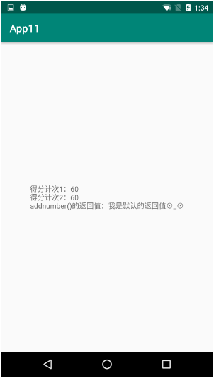
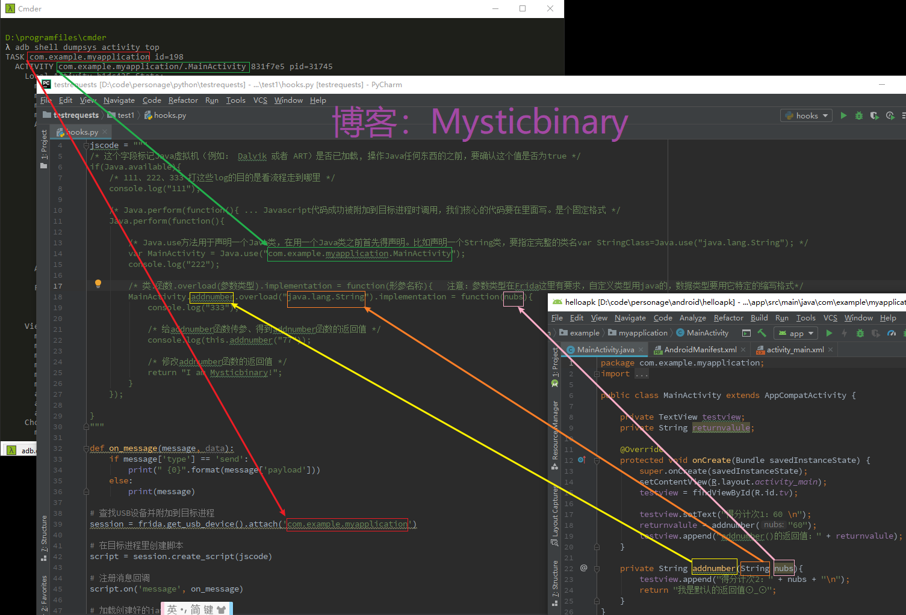
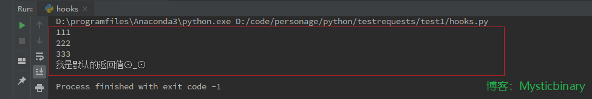
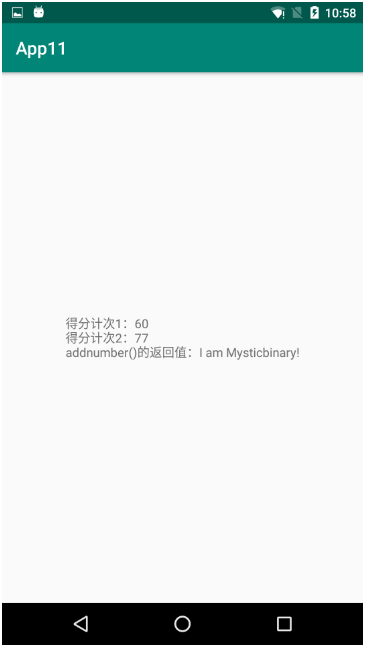

Frida是个so级别的hook框架，它可以帮助开发、安全人员对指定的进程的so模块进行分析。它主要提供了功能简单的Python接口和功能丰富的JS接口，使得hook函数和修改so可以编程化，接口中包含了主控端与目标进程的交互接口。
目标进程的交互接口分为：
Frida功能较多，暂时没有需求要每个都掌握，我现在的需求就是在程序运行的时候修改函数传参值、得到函数的返回值这种简单操作，下面通过JS配合Python脚本方式对这两个功能进行探讨。
adb shell dumpsys activity top，获取当前 Android 系统中与用户交互（顶层） Activity 的详细信息自己写的一个Android Demo，下面有代码。

adb shell dumpsys activity top
TASK com.example.myapplication id=190
ACTIVITY com.example.myapplication/.MainActivity 6b2b7a5 pid=31745
Local Activity e71a071 State:
mResumed=false mStopped=true mFinished=false
mChangingConfigurations=false
mCurrentConfig={1.0 ?mcc?mnc zh_CN ldltr sw411dp w411dp h659dp 420dpi nrml port finger -keyb/v/h -nav/h s.4}
mLoadersStarted=true
Active Fragments in 6e3c2de:
#0: ReportFragment{a0dccbf #0 androidx.lifecycle.LifecycleDispatcher.report_fragment_tag}
mFragmentId=#0 mContainerId=#0 mTag=androidx.lifecycle.LifecycleDispatcher.report_fragment_tag
mState=3 mIndex=0 mWho=android:fragment:0 mBackStackNesting=0
mAdded=true mRemoving=false mResumed=false mFromLayout=false mInLayout=false
mHidden=false mDetached=false mMenuVisible=true mHasMenu=false
mRetainInstance=false mRetaining=false mUserVisibleHint=true
mFragmentManager=FragmentManager{6e3c2de in HostCallbacks{6fc8f8c}}
mHost=android.app.Activity$HostCallbacks@6fc8f8c
Child FragmentManager{f8df6d5 in ReportFragment{a0dccbf}}:
FragmentManager misc state:
mHost=android.app.Activity$HostCallbacks@6fc8f8c
mContainer=android.app.Fragment$1@e652eea
mParent=ReportFragment{a0dccbf #0 androidx.lifecycle.LifecycleDispatcher.report_fragment_tag}
mCurState=3 mStateSaved=true mDestroyed=false
Added Fragments:
#0: ReportFragment{a0dccbf #0 androidx.lifecycle.LifecycleDispatcher.report_fragment_tag}
FragmentManager misc state:
mHost=android.app.Activity$HostCallbacks@6fc8f8c
mContainer=android.app.Activity$HostCallbacks@6fc8f8c
mCurState=3 mStateSaved=true mDestroyed=false
ViewRoot:
mAdded=true mRemoved=false
mConsumeBatchedInputScheduled=false
mConsumeBatchedInputImmediatelyScheduled=false
mPendingInputEventCount=0
mProcessInputEventsScheduled=false
mTraversalScheduled=false mIsAmbientMode=false
android.view.ViewRootImpl$NativePreImeInputStage: mQueueLength=0
android.view.ViewRootImpl$ImeInputStage: mQueueLength=0
android.view.ViewRootImpl$NativePostImeInputStage: mQueueLength=0
Choreographer:
mFrameScheduled=false
mLastFrameTime=64637557 (5732266 ms ago)
View Hierarchy:
com.android.internal.policy.PhoneWindow$DecorView{85c75db V.E...... R....... 0,0-1080,1920}
android.widget.LinearLayout{da91878 V.E...... ........ 0,0-1080,1794}
android.view.ViewStub{b442b51 G.E...... ......I. 0,0-0,0 #10203b0 android:id/action_mode_bar_stub}
android.widget.FrameLayout{2df4fb6 V.E...... ........ 0,63-1080,1794}
androidx.appcompat.widget.ActionBarOverlayLayout{2294b7 V.E...... ........ 0,0-1080,1731 #7f070030 app:id/decor_content_parent}
androidx.appcompat.widget.ContentFrameLayout{4934424 V.E...... ........ 0,147-1080,1731 #1020002 android:id/content}
androidx.constraintlayout.widget.ConstraintLayout{94f2b8d V.E...... ........ 0,0-1080,1584}
androidx.appcompat.widget.AppCompatTextView{208b142 V.ED..... ........ 191,724-890,861 #7f07008d app:id/tv}
androidx.appcompat.widget.ActionBarContainer{ec1c553 V.ED..... ........ 0,0-1080,147 #7f070008 app:id/action_bar_container}
androidx.appcompat.widget.Toolbar{3d27e90 V.E...... ........ 0,0-1080,147 #7f070006 app:id/action_bar}
androidx.appcompat.widget.AppCompatTextView{68ff389 V.ED..... ........ 42,38-196,109}
androidx.appcompat.widget.ActionMenuView{c749f8e V.E...... ......ID 1080,0-1080,147}
androidx.appcompat.widget.ActionBarContextView{c1963af G.E...... ......I. 0,0-0,0 #7f07000e app:id/action_context_bar}
android.view.View{b88f3bc V.ED..... ........ 0,1794-1080,1920 #1020030 android:id/navigationBarBackground}
android.view.View{2fb3f45 V.ED..... ........ 0,0-1080,63 #102002f android:id/statusBarBackground}
Looper (main, tid 1) {69f269a}
(Total messages: 0, polling=false, quitting=false)
Local FragmentActivity e71a071 State:
mCreated=true mResumed=false mStopped=true FragmentManager misc state:
mHost=androidx.fragment.app.FragmentActivity$HostCallbacks@4a28bcb
mContainer=androidx.fragment.app.FragmentActivity$HostCallbacks@4a28bcb
mCurState=2 mStateSaved=true mStopped=true mDestroyed=false这个是自己写的android代码，没有混淆。如果你用反编译的方式打开别人的代码，大概率是混淆过的，不过也一样用，无非是将类名、函数名、变量名变成a、b、c...，只是增加看代码的难度而已，但是调用流程还是一样的。
public class MainActivity extends AppCompatActivity {
private TextView testview;
private String returnvalule;
@Override
protected void onCreate(Bundle savedInstanceState) {
super.onCreate(savedInstanceState);
setContentView(R.layout.activity_main);
testview = findViewById(R.id.tv);
testview.setText("得分计次1：60 \n");
returnvalule = addnumber("60");
testview.append("addnumber()的返回值：" + returnvalule);
}
private String addnumber(String nubs){
testview.append("得分计次2：" + nubs + "\n");
return "我是默认的返回值⊙_⊙";
}
}import frida
import sys
jscode = """
/* 这个字段标记Java虚拟机（例如： Dalvik 或者 ART）是否已加载, 操作Java任何东西的之前，要确认这个值是否为true */
if(Java.available){
/* 111、222、333 打这些log的目的是看流程走到哪里 */
console.log("111");
/* Java.perform(function(){ ... Javascript代码成功被附加到目标进程时调用，我们核心的代码要在里面写。是个固定格式 */
Java.perform(function(){
/* Java.use方法用于声明一个Java类，在用一个Java类之前首先得声明。比如声明一个String类，要指定完整的类名var StringClass=Java.use("java.lang.String"); */
var MainActivity = Java.use("com.example.myapplication.MainActivity");
console.log("222");
/* 类.函数.overload(参数类型).implementation = function(形参名称){ */
MainActivity.addnumber.overload("java.lang.String").implementation = function(nubs){
console.log("333");
/* 给addnumber函数传参、得到addnumber函数的返回值 */
console.log(this.addnumber("77"));
/* 修改addnumber函数的返回值 */
return "I am Mysticbinary!";
}
});
}
"""
def on_message(message, data):
if message['type'] == 'send':
print(" {0}".format(message['payload']))
else:
print(message)
# 查找USB设备并附加到目标进程
session = frida.get_usb_device().attach('com.example.myapplication')
# 在目标进程里创建脚本
script = session.create_script(jscode)
# 注册消息回调
script.on('message', on_message)
# 加载创建好的javascript脚本
script.load()
# 读取系统输入
sys.stdin.read()调用说明：

脚本注入说明：
代码运行结果：

app注入结果：

最后总结一下,难点一是操作步骤多，难点二是要看懂要注入的函数的用法，Frida提供的API接口其实非常简单使用，最后感谢Frida作者开发出这么优秀的框架，让我们小白都能做注入。
https://www.cnblogs.com/mysticbinary/p/12012935.html
https://frida.re/docs/javascript-api/
https://bbs.pediy.com/thread-226846.htm
https://www.52pojie.cn/forum.php?mod=viewthread&tid=931872